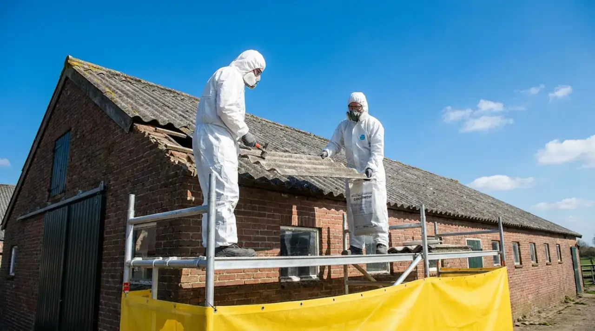

Natuur en sloop
Een vleermuis, mus of gierzwaluw in het dak: wat nu met je sloop?
Bij sloop denken de meeste mensen aan asbest en afval. Minder bekend is dat een gebouw ook een thuis kan zijn voor beschermde dieren. Wie daar te laat achter komt, ziet zijn planning maanden opschuiven. Wie het vooraf uitzoekt, houdt grip op de planning.

Waarom dit ook voor een gewoon huis geldt
De regels voor beschermde dieren gelden niet alleen in natuurgebieden. Ze gelden overal, dus ook in een rijtjeshuis, een schuur of een bedrijfshal. De Omgevingswet noemt dat een flora- en fauna-activiteit: iets doen wat gevolgen kan hebben voor dieren of planten die in het wild leven. Voor bepaalde gevallen is daarvoor een omgevingsvergunning nodig.
Op deze pagina gaat het om twee groepen. Bij vogels zoals de huismus en de gierzwaluw is het onder meer verboden om nesten opzettelijk te vernielen of weg te halen en om de vogels opzettelijk te storen, als dat storen wezenlijke invloed heeft op de soort. Bij vleermuizen is het verboden hun voortplantings- of rustplaatsen te beschadigen of te vernielen en de dieren opzettelijk te verstoren.
De zorgplicht: eerst kijken, dan slopen
Daarnaast geldt een zorgplicht. Wie iets gaat doen wat dieren kan raken, moet vooraf nagaan of er aanwijzingen zijn dat beschermde soorten op die plek of vlak ernaast voorkomen, en passende maatregelen nemen om schade te voorkomen. Dat is geen formaliteit: het betekent dat je de vraag zelf moet stellen, ook als niemand ernaar vraagt.
In de praktijk begint dat vaak met een quickscan. Een deskundige bekijkt dan of er in het gebouw beschermde dieren kunnen voorkomen. In Noord-Holland gaat de omgevingsdienst ervan uit dat zo'n quickscan in elk geval uit een bureauonderzoek en een veldbezoek bestaat. Blijkt daaruit dat er dieren kunnen zitten, dan volgt nader onderzoek, en dat is aan seizoenen gebonden.
Kwetsbare periodes per soort
De kennisdocumenten die voor de provincies zijn gemaakt, noemen per soort wanneer die het kwetsbaarst is:
| Soort | Kwetsbaar | Let op |
|---|---|---|
| Gierzwaluw | Voortplanting van 15 april tot 1 september | Nesten zijn het hele jaar beschermd |
| Huismus | Het hele jaar, het meest van maart tot en met augustus | Gebruikt zijn nest jaarrond |
| Gewone dwergvleermuis | Kraamperiode globaal half mei tot half juli; winterslaap november tot en met maart | Sloop eerst buiten deze periodes plannen |
Voor andere vleermuissoorten gelden eigen periodes. Ook buiten het broedseizoen kunnen nesten beschermd zijn, omdat sommige soorten elk jaar naar hetzelfde nest terugkeren. Het broedseizoen zelf heeft geen vaste datum; het hangt af van soort, plek en weer.
Als er dieren blijken te zitten
Dan heb je in veel gevallen een omgevingsvergunning nodig voor de flora- en fauna-activiteit. In Noord-Holland beslist de provincie daarover; je vraagt het aan via het Omgevingsloket en de Omgevingsdienst Noord-Holland Noord behandelt de aanvraag namens de provincie. De provincie verleent de vergunning alleen als er geen andere goede oplossing is, je een wettelijk erkende reden hebt, en de soort er als populatie niet op achteruitgaat. De maatregelen leg je vast in een activiteitenplan. Voorbeelden die de provincie noemt: werken binnen een bepaalde periode en extra nestkasten of andere verblijfplaatsen ophangen.
Voor vleermuizen geldt in Noord-Holland een extra stap: als hun verblijfplaatsen ongeschikt worden gemaakt, legt de provincie twee controlerondes op. En dat ongeschikt maken mag pas als je de vergunning hebt, of als uit nader onderzoek blijkt dat er geen verbod wordt overtreden.
Sommige organisaties, zoals woningbouwbedrijven die zich aan een afgesproken gedragscode houden, hoeven deze vergunning niet zelf aan te vragen. Ook kan een gemeente met een soortenmanagementplan een vergunning voor een heel gebied hebben. Vraag bij je gemeente na of dat voor jouw adres speelt.
Wat dit betekent voor je planning
- Stel de vraag vroeg, liefst tegelijk met het asbestonderzoek. Een quickscan is een kort onderzoek, maar nader onderzoek hangt aan seizoenen. Wie pas vlak voor de sloop gaat kijken, kan maanden moeten wachten.
- Plan de sloop zo mogelijk buiten de kwetsbare periodes van de soorten die er kunnen zitten.
- Rekent de aannemer erop om in het voorjaar het dak eraf te halen, vraag dan of iemand gekeken heeft naar nesten onder de pannen en in de gevel.
- Bewaar de uitkomst van de quickscan bij je sloopdossier.
Bij een sloopproject dat via Sloopregie loopt, hoort deze vraag bij de voorbereiding, samen met de asbestinventarisatie en de sloopmelding. Het onderzoek zelf doet een ecologisch deskundige.
Bronnen
- Omgevingswet, art. 5.1 lid 2, 5.10 en bijlage (flora- en fauna-activiteit, vergunningplicht, gedeputeerde staten bevoegd), geraadpleegd 25-10-2026
- Besluit activiteiten leefomgeving, art. 11.27, 11.37 en 11.46 (zorgplicht, verboden voor vogels en voor soorten van de habitatrichtlijn)
- Provincie Noord-Holland, Beschermde dieren en planten (Omgevingsloket, OD NHN, QuickScan, voorwaarden, activiteitenplan, gedragscodes)
- Omgevingsdienst Noord-Holland Noord, Meest gestelde vragen bescherming dier- en plantsoorten (quickscan, twee controlerondes vleermuizen), Broedseizoen en Wat is een SMP
- BIJ12, kennisdocumenten Gierzwaluw (versie 2.0), Huismus (versie 2.1) en Gewone dwergvleermuis (versie 2.0)